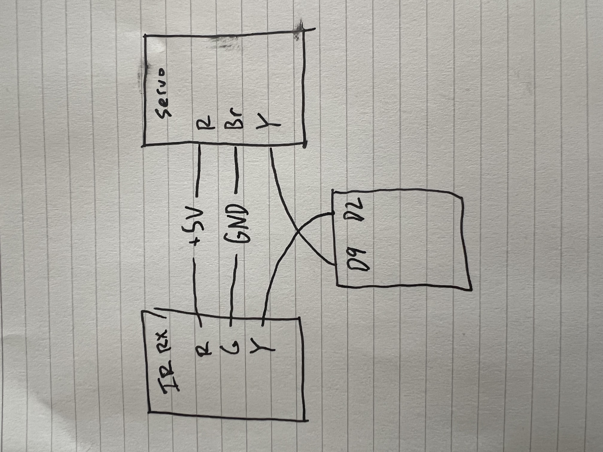
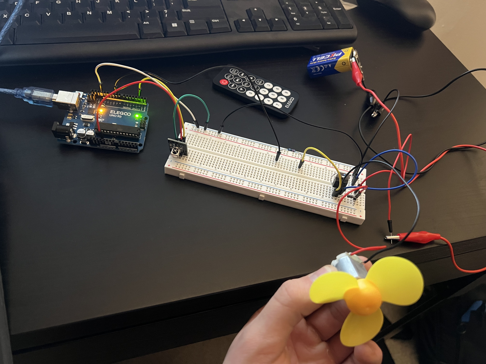

// Include the IRremote library so we can decode IR remote signals
#include
// Store the pin number used by the IR receiver signal output (Y pin)
const int IR_RECEIVE_PIN = 2;
// Store the PWM pin number used to drive the MOSFET gate (controls motor power)
const int MOSFET_GATE_PIN = 9;
// Store the current PWM output value (0 = off, 255 = full power)
int pwmValue = 0;
// Store the amount to change PWM each button press
const int pwmStep = 25;
// Store an example IR code for "increase speed"
unsigned long CODE_UP = 0xE718FF00;
// Store an example IR code for "decrease speed"
unsigned long CODE_DOWN = 0xF30CFF00;
// Store an example IR code for "toggle on/off"
unsigned long CODE_TOGGLE = 0xE916FF00;
// Store whether the motor is enabled or disabled
bool motorEnabled = false;
void setup() {
// Start serial communication to display custom messages and IR codes
Serial.begin(9600);
// Initialize the IR receiver so it can decode signals on the chosen pin
IrReceiver.begin(IR_RECEIVE_PIN, ENABLE_LED_FEEDBACK);
// Configure the MOSFET gate pin as an OUTPUT so it actively drives HIGH/LOW instead of floating
pinMode(MOSFET_GATE_PIN, OUTPUT);
// Set the gate pin LOW at startup so the MOSFET is OFF and the motor starts off safely
digitalWrite(MOSFET_GATE_PIN, LOW);
// Print startup instructions using a message different from the example code
Serial.println("Motor PWM control ready: press remote buttons to change speed.");
}
void loop() {
// Check if an IR message has been received and decoded by the library
if (IrReceiver.decode()) {
// Read the decoded raw IR code from the IRremote data structure
unsigned long code = IrReceiver.decodedIRData.decodedRawData;
// Print the received IR code so we can copy it into our CODE constants
Serial.print("IR code: 0x");
// Print the code in hexadecimal format for easy copy/paste
Serial.println(code, HEX);
// If the toggle button is pressed, flip between motor enabled and disabled
if (code == CODE_TOGGLE) {
// Toggle the motor enabled state variable
motorEnabled = !motorEnabled;
// If the motor is being turned off, set PWM to zero immediately
if (!motorEnabled) {
// Set PWM output to 0 so the MOSFET turns off and the motor stops
pwmValue = 0;
// Write PWM 0 to the gate pin so motor power is removed
analogWrite(MOSFET_GATE_PIN, pwmValue);
// Print confirmation message to serial monitor
Serial.println("Motor state: OFF");
}
else {
// If turning on, start at a moderate speed so it visibly moves
pwmValue = 120;
// Write the starting PWM value to the MOSFET gate pin
analogWrite(MOSFET_GATE_PIN, pwmValue);
// Print confirmation message to serial monitor
Serial.println("Motor state: ON (starting at medium speed)");
}
}
// If the increase-speed button is pressed and motor is enabled, increase PWM
else if (code == CODE_UP && motorEnabled) {
// Increase PWM by a fixed step
pwmValue = pwmValue + pwmStep;
// Clamp PWM so it never exceeds 255 (maximum 8-bit PWM)
pwmValue = constrain(pwmValue, 0, 255);
// Output the new PWM value to the MOSFET gate to increase motor power
analogWrite(MOSFET_GATE_PIN, pwmValue);
// Print a custom speed message showing the new PWM value
Serial.print("Motor speed increased | pwm=");
// Print the current PWM value
Serial.println(pwmValue);
}
// If the decrease-speed button is pressed and motor is enabled, decrease PWM
else if (code == CODE_DOWN && motorEnabled) {
// Decrease PWM by a fixed step
pwmValue = pwmValue - pwmStep;
// Clamp PWM so it never goes below 0
pwmValue = constrain(pwmValue, 0, 255);
// Output the new PWM value to the MOSFET gate to decrease motor power
analogWrite(MOSFET_GATE_PIN, pwmValue);
// Print a custom speed message showing the new PWM value
Serial.print("Motor speed decreased | pwm=");
// Print the current PWM value
Serial.println(pwmValue);
}
// If some other button is pressed, report it but do not change motor behavior
else {
// Print a message indicating no mapped action occurred
Serial.println("No action mapped to that button (or motor is OFF).");
}
// Add a short delay so repeated IR signals do not cause rapid jitter
delay(200);
// Resume IR receiver decoding for the next message
IrReceiver.resume();
}
}
Schematic & Circuit:


Functioning circuit:
 Additional Questions:
Additional Questions:
1: For your mosfet, what is the absolute maximum amount of current between pins 2 and 3? IRLZ44N - 47 A
2: Draw a schematic for a circuit with using at least your arduino, a DC motor, a flyback diode, and capacitors between power and ground.
Find parts with datasheets you could use for each of these schematic components.
3: Draw a schematic using at least your arduino, this chip, and two motors.
Write (pseudo) code that shows how you would move the motors both forward, both back, then one forward one back, and one back then forward.
4: Did you use AI tools in completing this assignment?
I used AI tools to assist in implementing the mosfet code, ensuring that I safely and
efficiently add an external power source, and
conceptual clarification with downloading libraries.